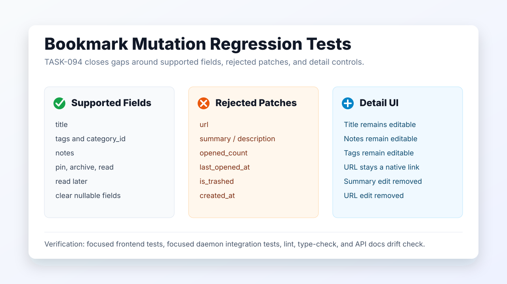

Grimoire Task Report
Bookmark Mutation Regression Tests

Before
Bookmark detail tests covered many controls, but daemon update coverage did not exercise every mutable field. Unsupported patch fields such as url, summary, and open metrics were silently ignored, while the detail view still showed hover edit controls for URL and extracted summary.
Problem
TASK-094 needed a clear regression boundary: supported bookmark mutations should be covered end to end, and unsupported or immutable fields should either fail explicitly at the API or have no editable UI affordance.
Changes Added
- Added daemon integration tests for supported patch fields, clearing nullable values, unsupported fields, and non-object patch bodies.
- Added frontend tests for title editing, supported mutation patches, API client serialization, and the absence of unsupported URL/summary edit controls.
- Changed
PUT /bookmarks/:idto reject unknown bookmark patch fields with422instead of silently returning the unchanged bookmark. - Removed the URL and extracted-summary edit affordances from bookmark detail content while preserving title, notes, tags, status, read-later, read, archive, and open controls.
Result
Bookmark mutation behavior is now covered by focused regression tests, and unsupported fields have a consistent boundary: direct API attempts fail clearly, while the detail UI no longer invites unsupported URL or summary edits.
Verification
bun test src/test/integration/bookmarks.test.tspassed with 27 tests.npm run test -- src/components/BookmarkDetailContent.test.tsx src/components/BookmarkDetail.test.tsx src/hooks/use-bookmarks.test.ts src/lib/api.test.tspassed with 61 tests.npm run docs:api:checkpassed with API documentation up to date.npm run type-checkpassed for frontend and daemon TypeScript.npm run lintcompleted with only existing warnings in unrelated files.npm run check,npm run test:e2e,npx tsc --noEmit, andgit diff --checkpassed in the final review pass.
Implementation Notes
The daemon now checks that bookmark patches are JSON objects and rejects keys outside the documented update contract before field-specific validation runs. The frontend hook already avoided sending URL and summary patches; the detail component now matches that contract by removing those edit controls.
Files Changed
daemon/src/routes/bookmarks.tsdaemon/src/test/integration/bookmarks.test.tssrc/components/BookmarkDetail.tsxsrc/components/BookmarkDetailContent.tsxsrc/components/BookmarkDetailContent.test.tsxsrc/components/BookmarkDetail.test.tsxsrc/hooks/use-bookmarks.test.tssrc/lib/api.test.tstasks/done/TASK-094-bookmark-mutation-detail-regression-tests.md